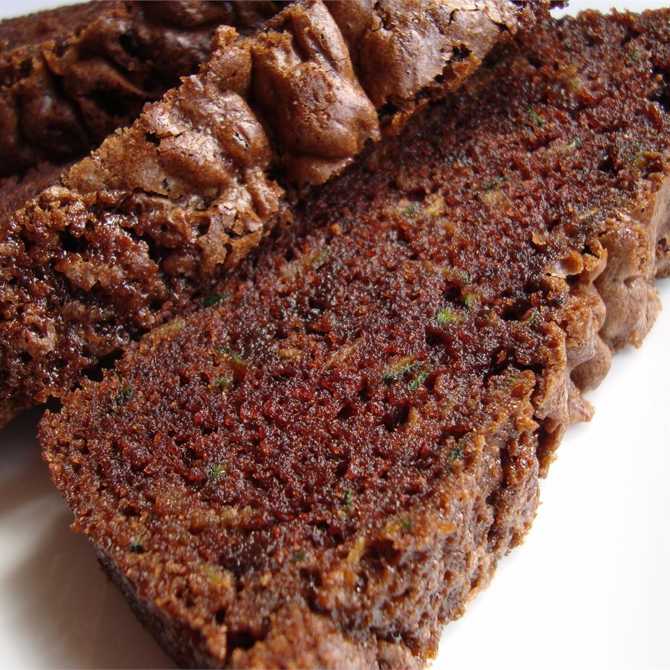

Chocolate Zucchini Bread Recipes

A moist scrumptious bread with chocolate and spices that even the kids will love.
This double chocolate zucchini bread makes the perfect afternoon snack whenever you're in need of a chocolate
fix.
It has a deep, rich chocolate flavor from unsweetened cocoa powder and bittersweet chocolate chips, yet
it's not so sweet that it tastes like dessert.
Recipe
- 2 (1 ounce) squares unsweetened chocolate
- 3 eggs
- 2 cups white sugar
- 1 cup vegetable oil
- 2 cups grated zucchini
- 1 teaspoon vanilla extract
- 2 cups all-purpose flour
- 1 teaspoon baking soda
- 1 teaspoon salt
- 1 teaspoon ground cinnamon
- ¾ cup semisweet chocolate chips
Steps
- Preheat oven to 350 degrees F (175 degrees C). Lightly grease two 9x5 inch loaf pans. In a microwave-safe
bowl, microwave chocolate until melted. Stir occasionally until chocolate is smooth.
- In a large bowl, combine eggs, sugar, oil, grated zucchini, vanilla and chocolate; beat well. Stir in the
flour baking soda, salt and cinnamon. Fold in the chocolate chips. Pour batter into prepared loaf pans.
- Bake in preheated oven for 60 to 70 minutes, or until a toothpick inserted into the center of a loaf comes
out clean.
return to main page